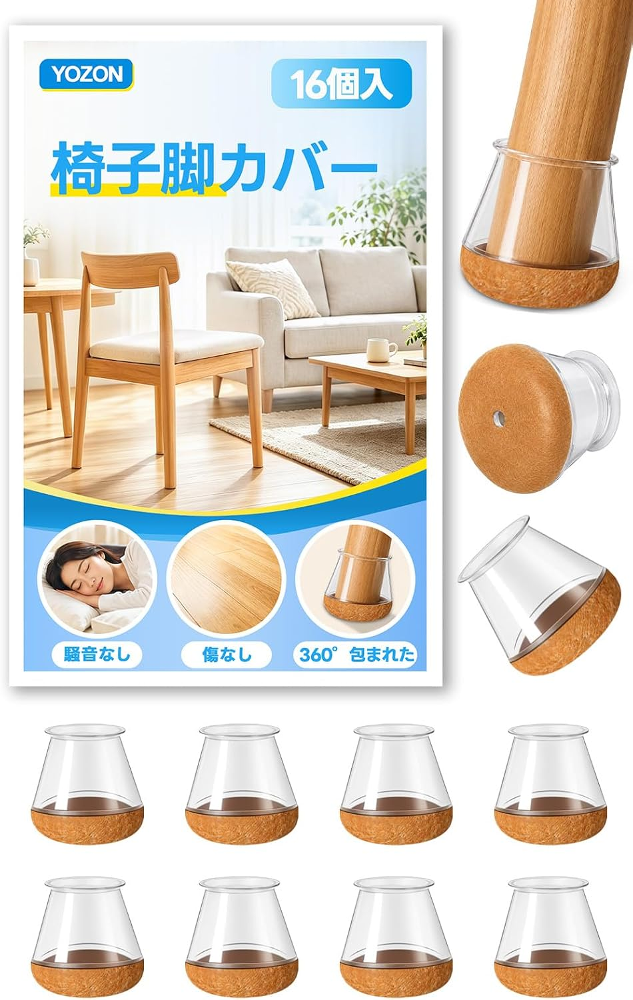
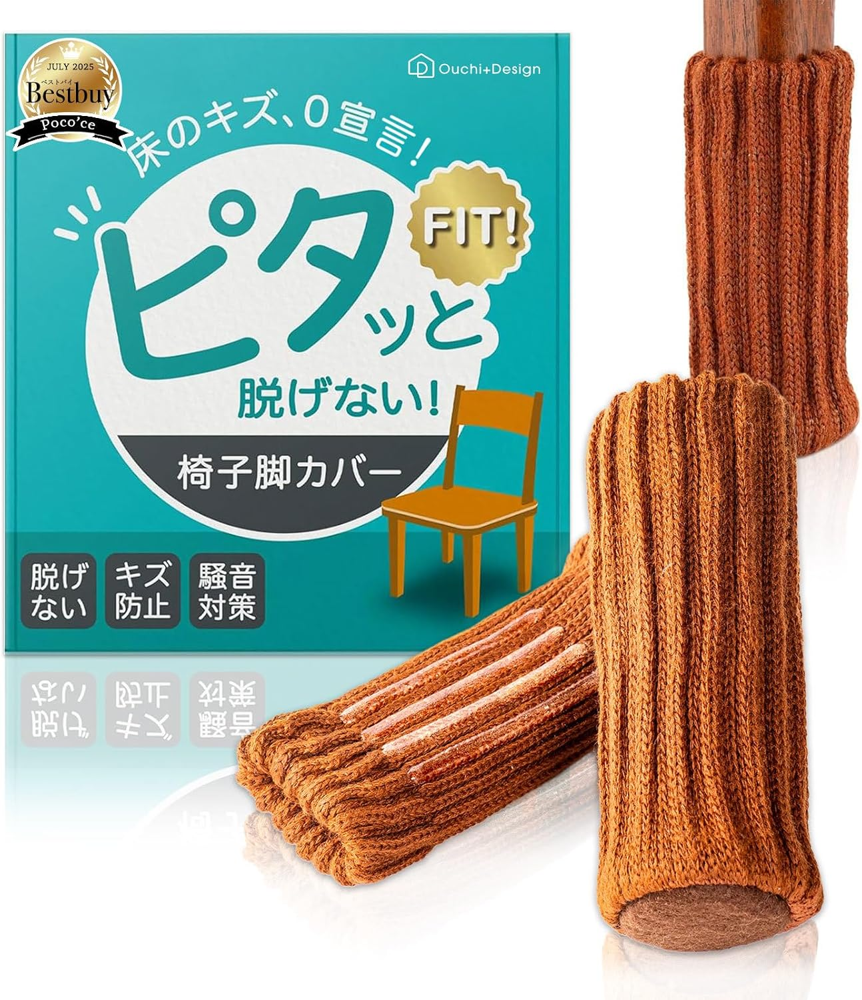
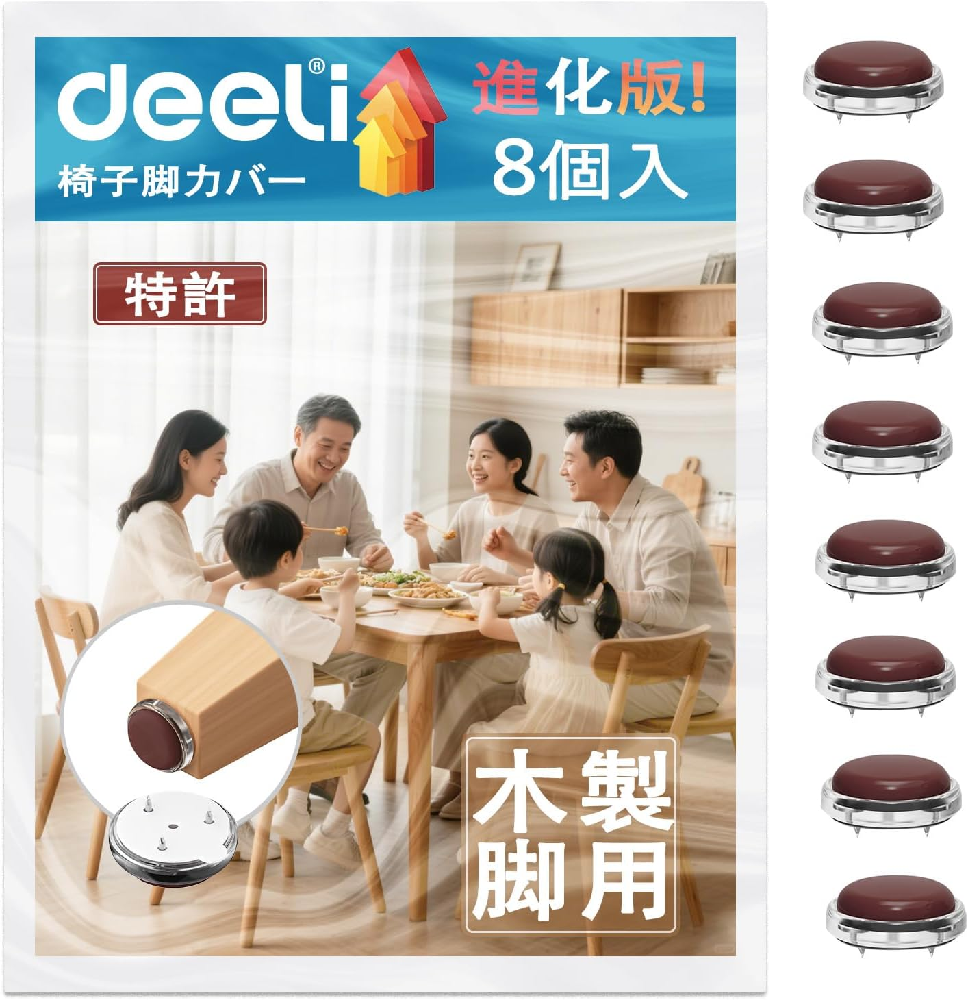
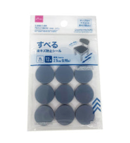

椅子脚のキズ防止パッド、つけ方で全然違う
——フェルト・シリコン・ニット・100均を比較

椅子の脚に貼るキズ防止パッドを探すと、丸いフェルトを貼るだけの定番品から、靴下のようにかぶせるタイプ、ピンで留めるタイプまで、思った以上に選択肢があります。入り数もパッケージもばらばらで、価格の数字だけでは比べにくいジャンルです。
Amazonの定番品に加えて、100円ショップにも似た商品があるので、フェルト・シリコン・ニット・ピン留めの4つの「つけ方」と、100均の実力を並べて比較しました。参考にしたのは、実際に使っている方々のレビューです。
選び方の整理
見るところは2つです。
- つけ方 — 貼る・かぶせる・刺すで、剥がれ・脱げの心配や、脚の形状への対応が変わる
- 1枚あたりのコスト — 入り数が8個〜48個までばらばらなので、パッケージ価格だけでは比較にならない
※本文中の商品リンクはアフィリエイトリンクです（PR）。商品ページとレビューをもとにまとめています。
一覧
- X-PROTECTOR フェルト家具パッド（48個入・ベージュ）¥8991枚¥19・★4.4（79,968件）
- YOZON 椅子脚カバー シリコン椅子脚キャップ（16個入・透明）¥1,0991個¥69・★4.2（465件）
- Ouchi+Design チェアソックス（16枚入・ブラウン）¥1,9801枚¥124・★4.3（347件）
- Deeli 椅子脚カバー 木製脚用（8個入・フッ素加工）¥1,3291個¥166・★4.4（253件）
- ダイソー すべる床キズ防止シール（丸・12個入）¥1101枚¥9・オンラインレビューなし
※価格・レビュー件数は2026年8月9日時点のAmazon.co.jpの情報です（ダイソーのみ公式オンラインショップの表示価格。店舗専売のためレビュー件数は非公開）。「1枚」あたりの金額は、パッケージ価格を入り数で割った単純計算です。
つけ方の違い
いちばん多いのは、丸く切られたフェルトを両面テープで貼るタイプです。X-PROTECTORがこれにあたります。手軽で価格も安いのが利点ですが、レビューを見ると「長く使っているとたまにズレる」という声も見かけます。接着剤の粘着力が落ちれば、いずれ貼り直しが必要になるタイプです。
YOZONとOuchi+Designは、靴下やキャップのように脚全体にかぶせるタイプ。接着剤を使わないので、剥がれて粘着力が落ちるという心配自体がありません。YOZONは透明シリコンの底にフェルトを仕込んだ構造、Ouchi+Designは二重層ニットで、見た目の印象もかなり違います。Deeliだけは仕組みが異なり、脚の底面に小さなピン（針）を刺して固定するタイプです。接着剤に頼らず、フッ素加工で滑りも良くしています。
それぞれの性格
X-PROTECTOR フェルト家具パッド（48個入・¥899）
直径2.5cm・厚さ0.4cmの厚手フェルトを、強力な両面テープで貼り付けるタイプです。レビュー件数はこのジャンルで圧倒的な約8万件、評価も★4.4と実績があります。「厚手のフェルトで量もたっぷりコスパ抜群」というレビューが目立つ一方、「長く使ってるとたまにずれちゃうこともある」という声も。1枚あたり¥19と、今回のAmazon商品の中ではいちばん安く、量を必要とする人・まず試したい人に向いています。
YOZON 椅子脚カバー シリコン椅子脚キャップ（16個入・¥1,099）

透明シリコンのキャップに、底面がフェルト張りになった構造です。脚を360°包み込むので、貼るタイプのような剥がれ・ズレの心配がありません。透明なので脚の色を選ばず馴染みやすく、適用範囲は直径14〜20mmの丸脚。「家具パッド」カテゴリでベストセラー4位という実績もあります。接着剤に頼りたくない人向けの選択肢です。
Ouchi+Design チェアソックス（16枚入・¥1,980）

二重層ニットの靴下のように脚にかぶせるタイプで、パッケージにも「ピタッと脱げない」とある通り、脱げにくさが売りです。キズ防止だけでなく、椅子を引くときの騒音対策も謳われています。5点の中では価格・1枚あたりコストともにいちばん高めですが、見た目に温かみがあり、床材や家具の雰囲気を選びにくいのも特徴です。ただ、我が家では猫がなぜかこのタイプだけ気になるようで、爪をかけて脱がせにかかってしまい、個人的にはうまく使えていません。動物と暮らしている家庭では、その点も見ておくとよさそうです。
Deeli 椅子脚カバー 木製脚用（8個入・¥1,329）

底面の小さなピンを木製脚の切り口に刺して固定するタイプで、接着剤を一切使いません。フッ素加工で動きが滑らかになり、「サイズ選び不要」を謳っています。木製脚専用で、5点の中では唯一「刺す」方式。過去1か月で400点以上購入され、家具パッドカテゴリのベストセラー1位という実績もあります。
ダイソー すべる床キズ防止シール（丸・12個入・¥110）

100円ショップの商品ですが、素材はフッ素樹脂とEVA樹脂で、貼るだけのフェルトというより「滑りをよくするシール」に近い作りです。直径2.5cm・12個入りで、1枚あたりに換算すると¥9と、今回でいちばん安くなります。オンラインでは扱いがなく店舗専売のためレビュー件数はわかりませんが、複数のブログ記事で「想像以上に快適だった」と紹介されています。まず1パックだけ近所の店舗で試してみたい人に向いています。
選ぶなら
- とにかく安く数を揃えたいなら、X-PROTECTOR（1枚¥19）。レビュー実績も圧倒的
- 接着剤の劣化・剥がれが気になるなら、かぶせるタイプのYOZONかOuchi+Design
- 見た目にも温かみを出したいなら、Ouchi+Designのニットソックス
- 木製の丸脚に、接着剤なしでしっかり固定したいなら、Deeliのピン留めタイプ
- まず1パックだけ近所で試したいなら、ダイソーの「すべる床キズ防止シール」。1枚あたりのコストは今回でいちばん安い
椅子の脚は普段あまり見ない場所ですが、床のキズは一度ついてしまうと直せません。つけ方の違いと1枚あたりのコストを見比べて、床材や椅子の脚の形に合うものを選ぶのがよさそうです。
あわせて読みたい